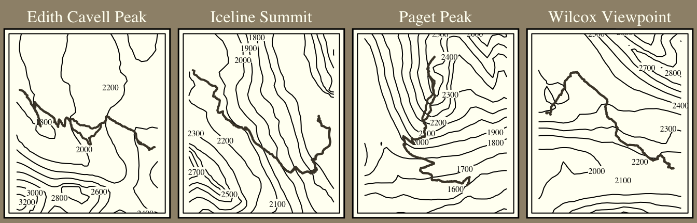

Visualizing Strava Data Collected from the rStrava
I’ve wanted to write a blog post making some data visualization using the Strava API for some time however was never able to come up with a cool idea that was not already common among others blogs.
For example, there is the Marcus Volz Strava package which allows you to make some cool visualizations using your Strava data.
Rather than repeat the same usual Strava plots, I’ve focused on mapping some of the hikes I recently went on during a hiking trip in the Rocky Mountains.
The goal is to overlay the GPX Strava data with topographic maps of the area to make a set of posters I can print out to commemorate the trip.
Collecting the data from Strava
I use the rStrava package to read in the activity data. This package makes the process very straight forward.
Let’s download the hiking data using rStrava. It is pretty straight forward to link authenticate your account, the process is covered at the rStrava Github in detail.
With the data, lets make a quick plot of one of the activities. I came across a useful approach to convert the rStrava activity polyline to a simple feature object in this blog by r.iresmi.net.
I am plotting the data as a thematic map using the tmap package. I’ve enjoyed using this package as it has many built in features for customizing maps and follows a similar syntax to ggplot.
Now that we have the GPX data in our plot, we need to add the contour lines. This is the trickier portion of the project, and is my motivation for writing these steps into a blog post as it wasn’t obvious first where to get the topographic data from, and then how to overlay the information with the Strava GPX data.
The raster package does all of the heavy lifting here. From raster I collect the elevation data using getData("SRTM", lon, lat) which returns
90m raster data based on the latitude-longitude coordinates provided.
Notice the raster data returned covers a lot of land. We will need to crop this down so that we can see the GPX hike data once we add it to the plot. I’m able to crop the raster using the bounding box of the GPX data.
Moving from the raster data to contour lines is simple with the raster::rasterToCountor() function. The tm_iso function will plot the contour lines and will include the elevation labels.
Finally, we can finish this off by adding in some formatting and labeling based on the metadata collected from Strava. Here are some theme options to show off the plot.
We can repeat the process for a list of activities. Then by collecting the maps into a list we can use tmap_arrange() to plot the maps side by side allowing for detailed contours across multiple activity plots.
Code
# Drop Wapta Falls as is more of a walk than a hikeactivities = activities |>filter(name !="Wapta Falls")# get max bbox across all activities to offset each plot consistently from the centerbbox_list =lapply(split(activities, activities$name), FUN =function(x) { line_data = x |>mutate(geom =gp2sf(map.summary_polyline)) |>st_sf(crs ="EPSG:4326")st_bbox(line_data)}) |>bind_rows() |>summarise(dx =max(xmax - xmin),dy =max(ymax - ymin) )delta_x = bbox_list$dx /2delta_y = bbox_list$dy /1.5# make more verticalmap_list =lapply(split(activities, activities$name), FUN =function(x) {if (x$name %in%c("Wilcox Viewpoint", "Edith Cavell Peak")) { city ="Jasper, AB" } else { city ="Yoho, BC" }# generate hike path line_data = x |>mutate(geom =gp2sf(map.summary_polyline)) |>st_sf(crs ="EPSG:4326")# get topographic data & set boundary for plot bbox =st_bbox(line_data) lat = (bbox$ymax + bbox$ymin) /2 lng = (bbox$xmax + bbox$xmin) /2 padding =0.001 elevation_data =getData("SRTM", lon = lng, lat = lat) zoomed_data = raster::crop( elevation_data, extent( lng - delta_x - padding, lng + delta_x + padding, lat - delta_y - padding -0.001, # for text in bottom lat + delta_y + padding ) ) contour_lines =rasterToContour(zoomed_data)# make plot out =tm_shape(contour_lines) +tm_iso(along.lines =FALSE) +tm_shape(line_data) +tm_lines(col ="grey20", lwd =2) +tm_style("classic") +tm_layout(frame.double.line =TRUE, main.title = x$name, main.title.size =1, outer.bg.color ="grey50", main.title.color ="white",main.title.position ="center") out})width =7height = width * delta_x / delta_ytmap_arrange(map_list, nrow =1)

Source Code
---title: "Visualizing Strava Activities"date: '2023-08-20'editor: sourcedescription: Mapping Strava activity data onto contour maps. categories: - R - Data Visualization - Spatial Data image: thumb.pngformat: html: code-fold: true code-tools: true---## Visualizing Strava Data Collected from the rStravaI've wanted to write a blog post making some data visualization using the Strava API for some time however was never able to come up with a cool idea that was not already common among others blogs. For example, there is the [Marcus Volz Strava package](https://marcusvolz.com/strava/)which allows you to make some cool visualizations using your Strava data. Rather than repeat the same usual Strava plots, I've focused on mapping some of the hikes I recently went on during a hiking trip in the Rocky Mountains. The goal is to overlay the GPX Strava data with topographic maps of the area to make a set of posters I can print out to commemorate the trip. ## Collecting the data from StravaI use the rStrava package to read in the activity data. This package makes the process very straight forward. Let's download the hiking data using rStrava. It is pretty straight forward to link authenticate your account, the process is covered [at the rStrava Github](https://github.com/fawda123/rStrava) in detail. ```{r, echo=FALSE}# code to read in the data from local dirpacman::p_load(rStrava, dplyr, sf, purrr, tmap, raster)source("secrets.R")# create the authentication tokenstoken = httr::config(token =strava_oauth( app_name, app_client_id, app_secret,app_scope ="activity:read_all",cache =TRUE)) COLLECT_ACIVITIES =FALSEif(COLLECT_ACIVITIES) { activities = stoken |>get_activity_list() |>compile_activities() |>filter(start_date_local >=as.Date("2023/07/15"), start_date_local <=as.Date("2023/07/23"))write.csv(activities, "strava_activities.csv")} else { activities =read.csv("strava_activities.csv")}gp2sf =function(gp) { gp |> googlePolylines::decode() |>map_dfr(function(df) { df |>st_as_sf(coords =c("lon", "lat")) |>st_combine() |>st_cast("LINESTRING") |>st_sf() }) |>pull(1)}``````{r, eval=FALSE}# packages usedpacman::p_load(rStrava, dplyr, sf, purrr, tmap, raster)# strava authenticationapp_name ="XXXXXXXXXX"app_client_id ="XXXXXXXXXX"app_secret ="XXXXXXXXXX"stoken = httr::config(token =strava_oauth(app_name = app_name,app_client_id = app_client_id,app_secret = app_secret,app_scope ="activity:read_all",cache =TRUE ))activities = stoken |>get_activity_list() |>compile_activities() |>filter( start_date_local >=as.Date("2023/07/15"), start_date_local <=as.Date("2023/07/23") )```With the data, lets make a quick plot of one of the activities. I came across a useful approach to convert the rStrava activity polyline to a simple feature object in this [blog by r.iresmi.net](https://r.iresmi.net/posts/2023/map_your_strava_activities/). ```{r, warning=FALSE, message=FALSE}gp2sf =function(gp) { gp |> googlePolylines::decode() |>map_dfr(function(df) { df |>st_as_sf(coords =c("lon", "lat")) |>st_combine() |>st_cast("LINESTRING") |>st_sf() }) |>pull(1)}# plot hikehike = activities |>filter(name =="Edith Cavell Peak")gpx = hike |>mutate(geom =gp2sf(map.summary_polyline)) |>st_sf(crs ="EPSG:4326")map =tm_shape(gpx) +tm_lines()map```I am plotting the data as a thematic map using the [tmap](https://r-tmap.github.io/tmap/)package. I've enjoyed using this package as it has many built in features for customizing maps and follows a similar syntax to `ggplot`.```{r, warning=FALSE, message=FALSE}map1 = map +tm_style("classic") +tm_layout(title ="Edith Cavell Peak", title.position =c("center", "top"))map2 = map +tm_style("cobalt") +tm_layout(main.title ="Edith Cavell Peak",main.title.position =c("left") ) +tm_compass(type ="8star", position ="left", size =1)map3 = map +tm_style("bw") +tm_layout(frame =FALSE) +tm_compass(type ="arrow", position ="left", size =1)text =sprintf("%s\nHiked on %s", gpx$name, format(as.Date(gpx$start_date), "%B %e, %Y"))map4 = map +tm_style("albatross") +tm_credits(text = text, position =c("LEFT", "BOTTOM")) +tm_compass(type ="rose", position =c("right", "top"), size =2)tmap_arrange(map1, map2, map3, map4, nrow =2)```## Adding in the topographic linesNow that we have the GPX data in our plot, we need to add the contour lines. This is the trickier portion of the project, and is my motivation for writing these steps into a blog post as it wasn't obvious first where to get the topographic data from, and then how to overlay the information with the Strava GPX data. The `raster` package does all of the heavy lifting here. From `raster`I collect the elevation data using `getData("SRTM", lon, lat)` which returns 90m raster data based on the latitude-longitude coordinates provided. ```{r, warning=FALSE, message=FALSE}elevation_data =getData("SRTM", lon = gpx$end_latlng2, lat = gpx$end_latlng1)tm_shape(elevation_data) +tm_raster() +tm_style("albatross") +tm_layout(legend.bg.color ="white",legend.text.color ="black",legend.title.color ="black",legend.position =c("right", "top") )```Notice the raster data returned covers a lot of land. We will need to crop this down so that we can see the GPX hike data once we add it to the plot. I'm able to crop the raster using the bounding box of the GPX data. ```{r, warning=FALSE, message=FALSE}bbox =st_bbox(gpx)lat = (bbox$ymax + bbox$ymin) /2lng = (bbox$xmax + bbox$xmin) /2delta =0.0275zoomed_data = raster::crop( elevation_data, extent( lng - delta, lng + delta, lat - delta, lat + delta ))tm_shape(zoomed_data) +tm_raster() +tm_style("albatross") +tm_layout(legend.bg.color ="white",legend.text.color ="black",legend.title.color ="black",legend.position =c("right", "top") )```Moving from the raster data to contour lines is simple with the `raster::rasterToCountor()`function. The `tm_iso` function will plot the contour lines and will include the elevation labels.```{r, warning=FALSE, message=FALSE}contour_lines =rasterToContour(zoomed_data)tm_shape(contour_lines) +tm_iso()```Adding the GPX data to the contour lines is as simple as adding in an additional feature to the plot. ```{r, warning=FALSE, message=FALSE}tm_shape(contour_lines) +tm_iso() +tm_shape(gpx) +tm_lines(col ="grey20", lwd =3) +tm_style("bw") +tm_layout(frame.double.line =TRUE)```Finally, we can finish this off by adding in some formatting and labeling based on the metadata collected from Strava. Here are some theme options to show off the plot. ```{r, warning=FALSE, message=FALSE}info_card =sprintf("%s\n%s\nDistance: %s km\nElevation: %s m",format(as.Date(gpx$start_date), "%B %e, %Y"),"Jasper, Alberta",round(gpx$distance, 2),round(gpx$elev_high - gpx$elev_low, 2))dark =tm_shape(contour_lines) +tm_iso(along.lines =FALSE, size =0.5, bg.col ="#3c444d", col ="#535f6b") +tm_shape(gpx) +tm_lines(col ="#965251", lwd =3) +tm_style("cobalt") +tm_credits(text = info_card,bg.color ="#3c444d",position =c("LEFT", "TOP") ) +tm_layout(frame =TRUE,frame.double.line =TRUE,bg.color ="#3c444d",main.title = gpx$name,main.title.position =c("center", "TOP"),main.title.color ="#3c444d" )light =tm_shape(contour_lines) +tm_iso(along.lines =FALSE) +tm_shape(gpx) +tm_lines(lwd =2) +tm_style("classic") +tm_layout(frame =TRUE, frame.double.line =FALSE) +tm_credits(text = gpx$name, position =c("center", "TOP"), width =1, align ="center", bg.color ="white", size =1)tmap_arrange(dark, light, nrow =1)# design 3: landscape fitting hike betterelevation_data =getData("SRTM", lon = gpx$end_latlng2, lat = gpx$end_latlng1)bbox =st_bbox(gpx)lat = (bbox$ymax + bbox$ymin) /2lng = (bbox$xmax + bbox$xmin) /2delta =0.002zoomed_data = raster::crop( elevation_data, extent( bbox$xmin - delta, bbox$xmax + delta, bbox$ymin - delta, bbox$ymax + delta ))contour_lines =rasterToContour(zoomed_data)landscape =tm_shape(contour_lines) +tm_iso(along.lines =FALSE) +tm_shape(gpx) +tm_lines(col ="grey20", lwd =3) +tm_style("classic")tmap_save(tm = landscape, filename ="thumb.png", width =4)landscape```## Arranging multiple mapsWe can repeat the process for a list of activities. Then by collecting the maps into a list we can use `tmap_arrange()` to plot the maps side by side allowing for detailed contours across multiple activity plots. ```{r, warning=FALSE, message=FALSE, fig.widtht=7, fig.height=9/4}# Drop Wapta Falls as is more of a walk than a hikeactivities = activities |>filter(name !="Wapta Falls")# get max bbox across all activities to offset each plot consistently from the centerbbox_list =lapply(split(activities, activities$name), FUN =function(x) { line_data = x |>mutate(geom =gp2sf(map.summary_polyline)) |>st_sf(crs ="EPSG:4326")st_bbox(line_data)}) |>bind_rows() |>summarise(dx =max(xmax - xmin),dy =max(ymax - ymin) )delta_x = bbox_list$dx /2delta_y = bbox_list$dy /1.5# make more verticalmap_list =lapply(split(activities, activities$name), FUN =function(x) {if (x$name %in%c("Wilcox Viewpoint", "Edith Cavell Peak")) { city ="Jasper, AB" } else { city ="Yoho, BC" }# generate hike path line_data = x |>mutate(geom =gp2sf(map.summary_polyline)) |>st_sf(crs ="EPSG:4326")# get topographic data & set boundary for plot bbox =st_bbox(line_data) lat = (bbox$ymax + bbox$ymin) /2 lng = (bbox$xmax + bbox$xmin) /2 padding =0.001 elevation_data =getData("SRTM", lon = lng, lat = lat) zoomed_data = raster::crop( elevation_data, extent( lng - delta_x - padding, lng + delta_x + padding, lat - delta_y - padding -0.001, # for text in bottom lat + delta_y + padding ) ) contour_lines =rasterToContour(zoomed_data)# make plot out =tm_shape(contour_lines) +tm_iso(along.lines =FALSE) +tm_shape(line_data) +tm_lines(col ="grey20", lwd =2) +tm_style("classic") +tm_layout(frame.double.line =TRUE, main.title = x$name, main.title.size =1, outer.bg.color ="grey50", main.title.color ="white",main.title.position ="center") out})width =7height = width * delta_x / delta_ytmap_arrange(map_list, nrow =1)```